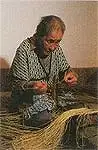
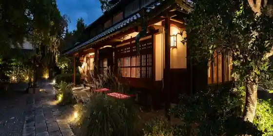
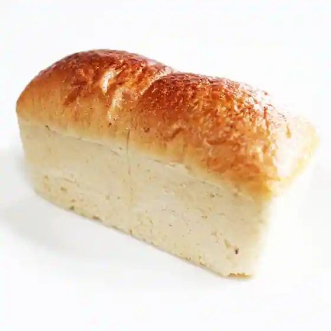
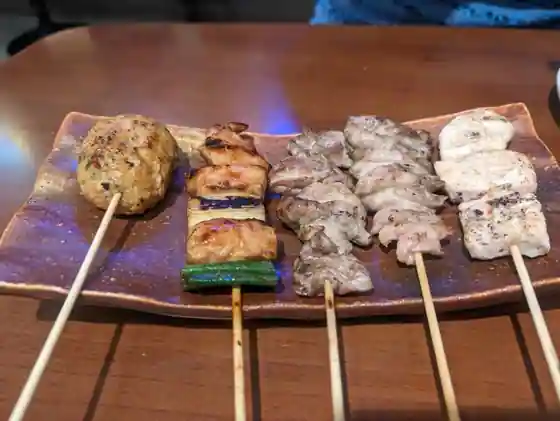
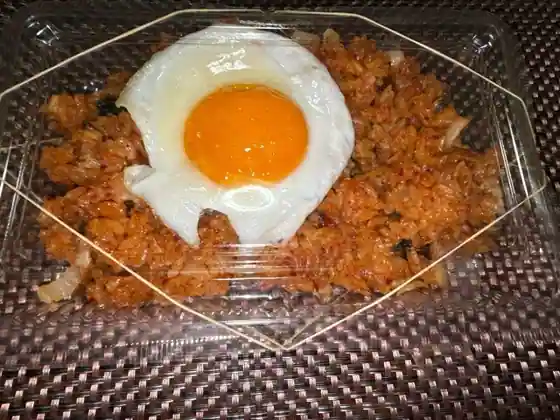
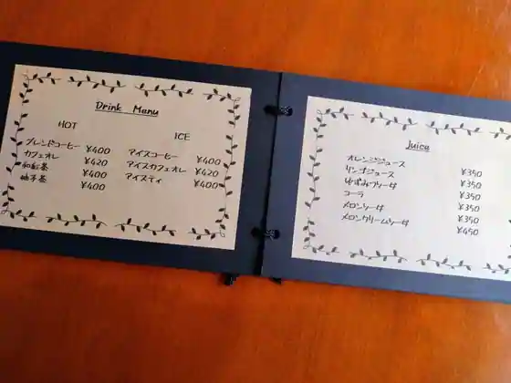

Ando, Nara: things to do, food and stays
Ando · Nara
Ando
Highlighted on the Nara map.

Stay
１日２組の古民家ホテル うぶすなの郷TOMIMOTO

1 Nichi 2 Kuno Ko Minka Hotel Ubusunano Sato TOMIMOTO
Hotel in Toanto, Ando with a renovated traditional house.
Dining
樸木

Boku Ki
食事処 つるあん
Shokuji Tokoro Tsuruan
地鶏焼肉 にわとり 法隆寺店

Jidori Yakiniku Niwatori Horyuji
うぶすなの郷 TOMIMOTO
Ubusunano Sato TOMIMOTO
ヒョナちゃんの店

Hyona Channo
&CAFE

&CAFE
Sights
Ando Folk History Museum
Gokuraku Tera (Ando)